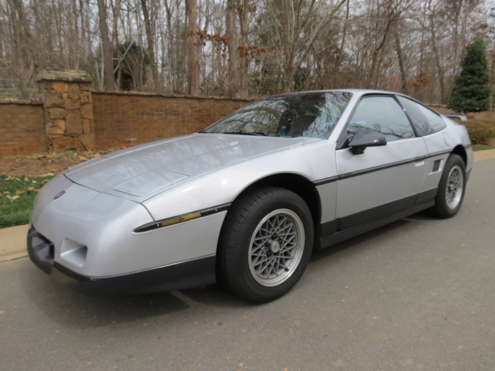
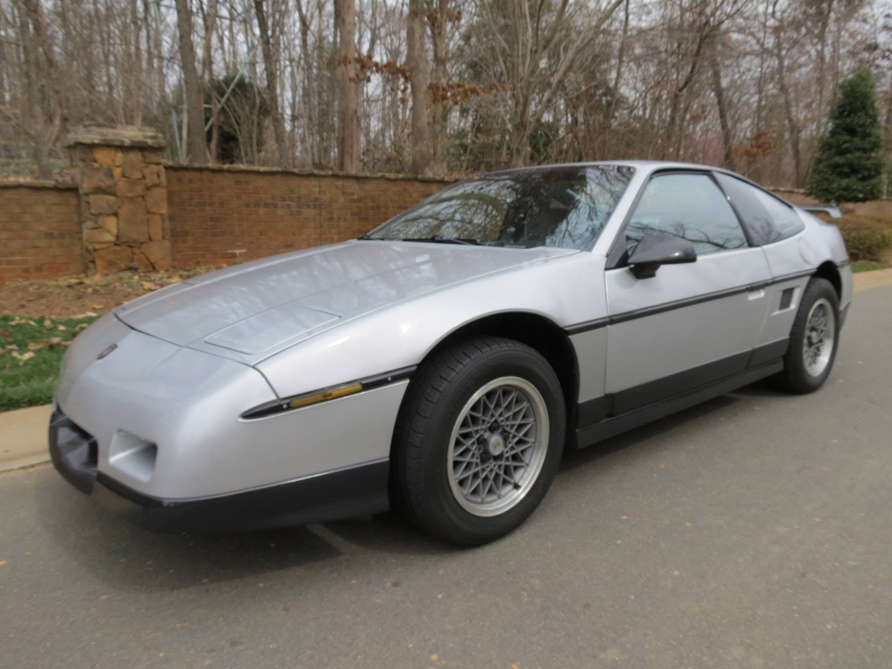
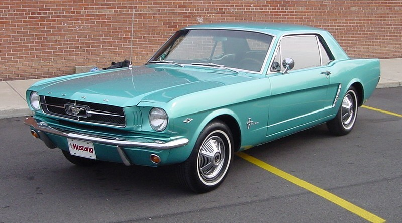
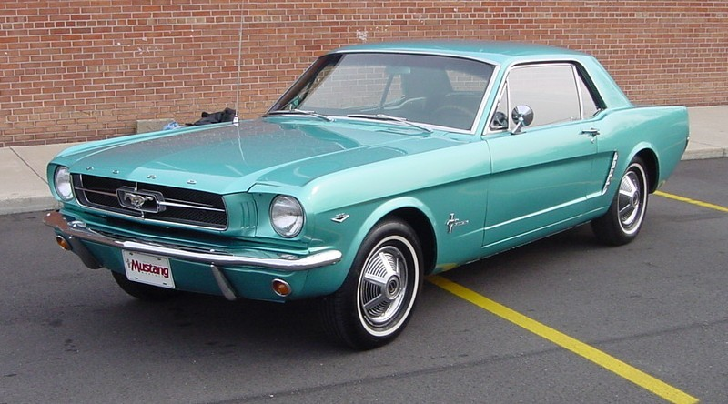
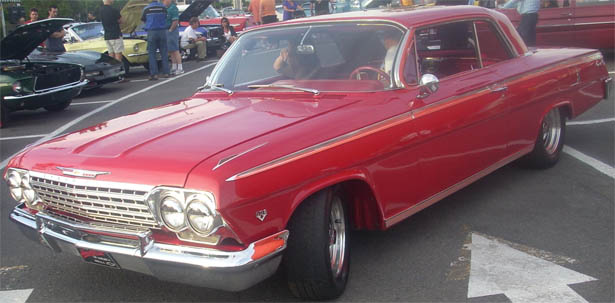
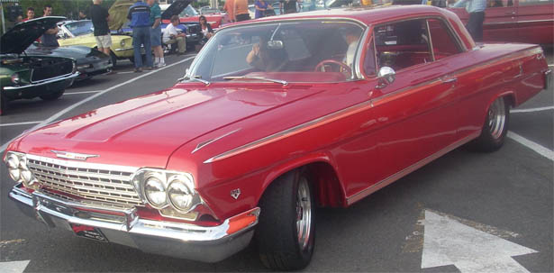

Foster's Cars for Sale
1982 Fiero
$Price
descriptionline1
descriptionline2

descriptionline1
descriptionline2

1965 Mustang
$8,200
Been driven all over town
Previous owner was flat-footed

Been driven all over town
Previous owner was flat-footed

1962 Chevy 409
$12,600
Four speed dual quad posi-traction
Really shines at the track

Four speed dual quad posi-traction
Really shines at the track
